Does it work?
Three checks had to pass before any result in this sweep means anything: the pinned frames really are pinned, K = all really does reproduce the input, and the character is performing motion rather than dissolving between poses. All three pass.
Keyframe conditioning is easy to verify, which is a large part of why it was chosen. If these checks failed, every result on the prompt pages would be an artefact of broken conditioning rather than anything about the video model.
Test 1 — the pinned frames are pinned#
The two exceptions are box_heavy at K = all, index 112: offset 0 scores 0.9531 and offset +4 scores 0.9544. The character is nearly still at that moment, so neighbouring frames are equally good matches. That is a tie in a static passage, not a conditioning failure.
Each check image below places the generated frame beside the blue frame that was handed in, at each pinned index. Click to open full size.
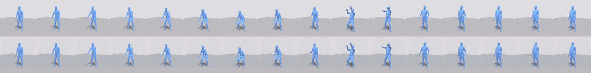
s1234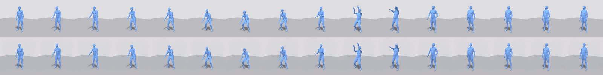
s5678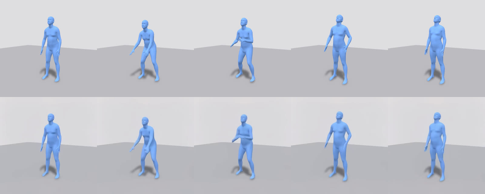
s1234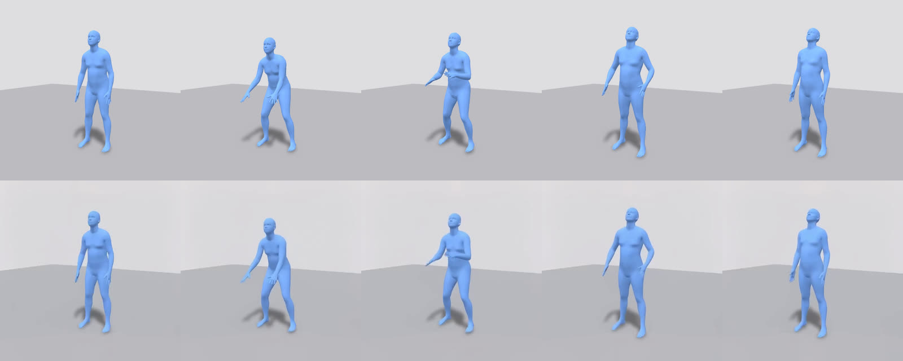
s5678box_heavy — the pinned indices at K = all (left) and K = 5 (right). Each
pair is generated frame against the frame we handed in.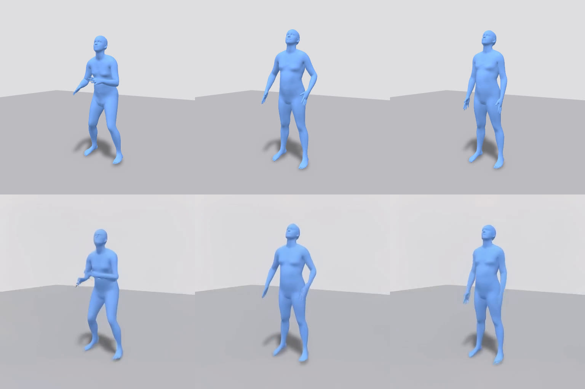
s1234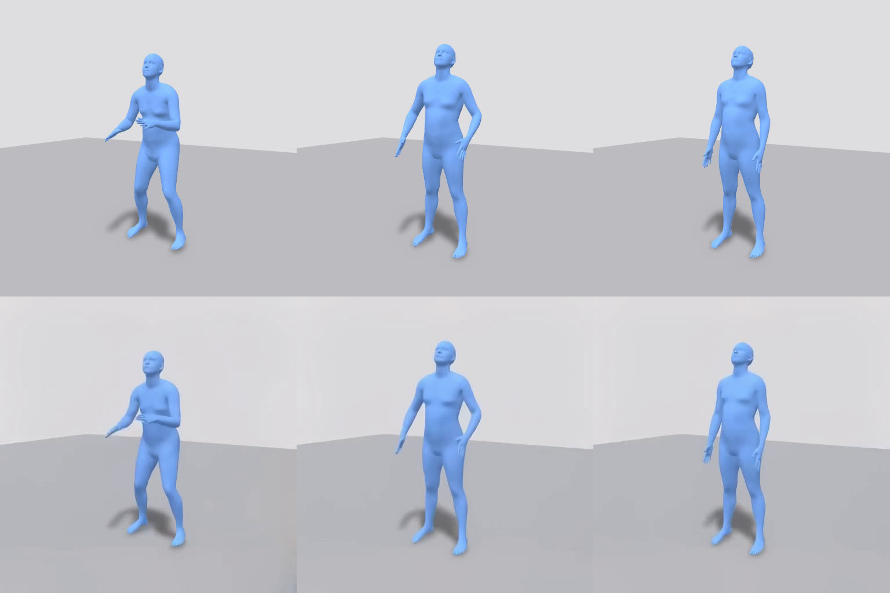
s5678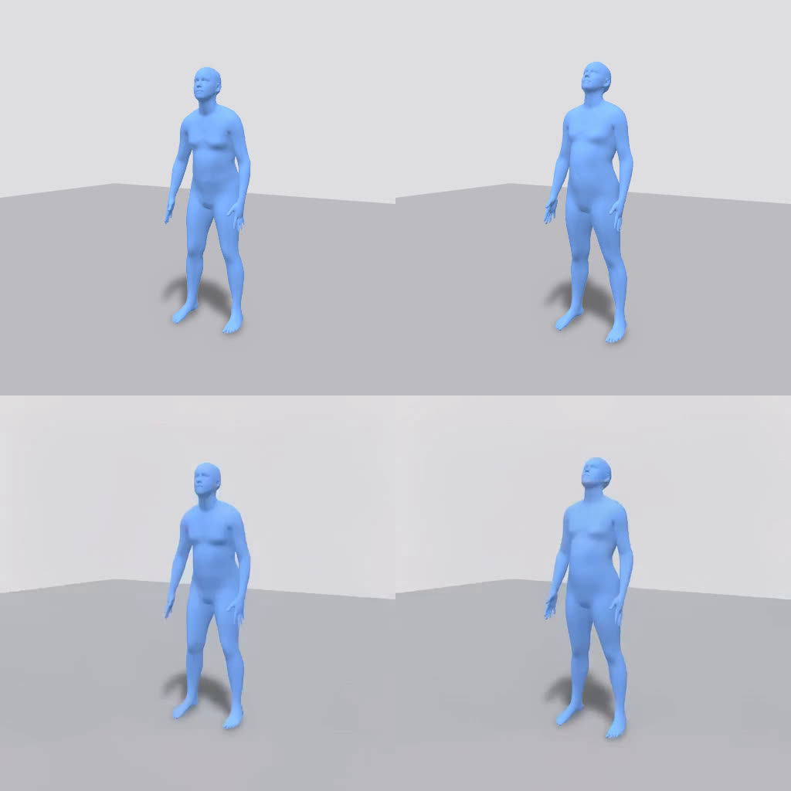
s1234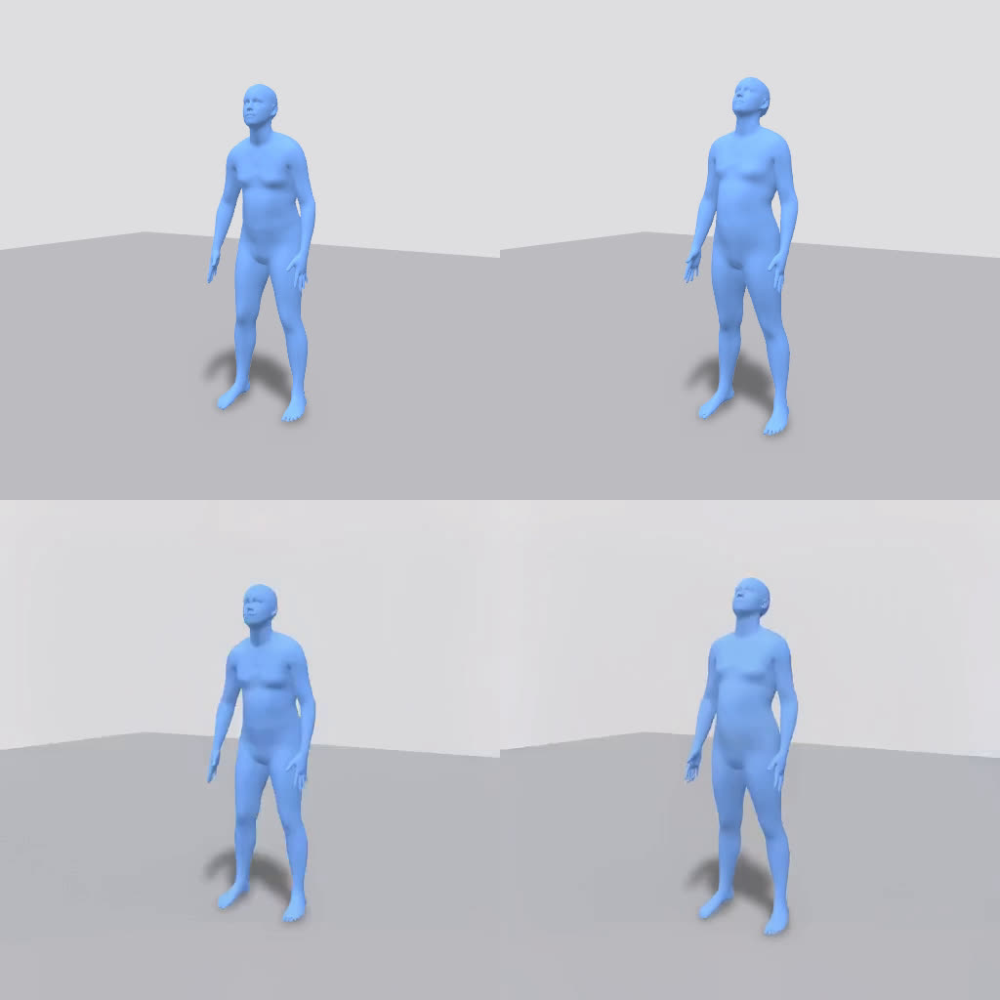
s5678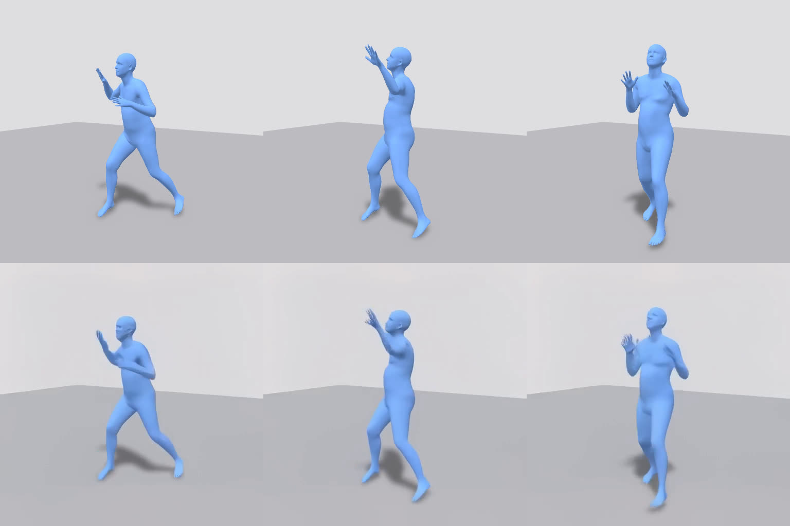
s1234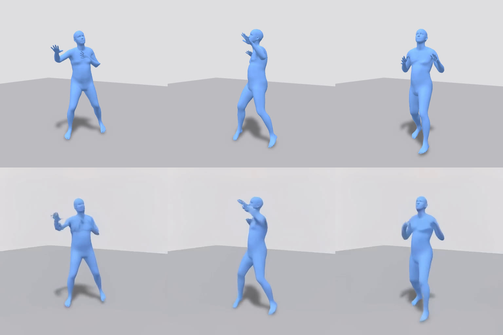
s5678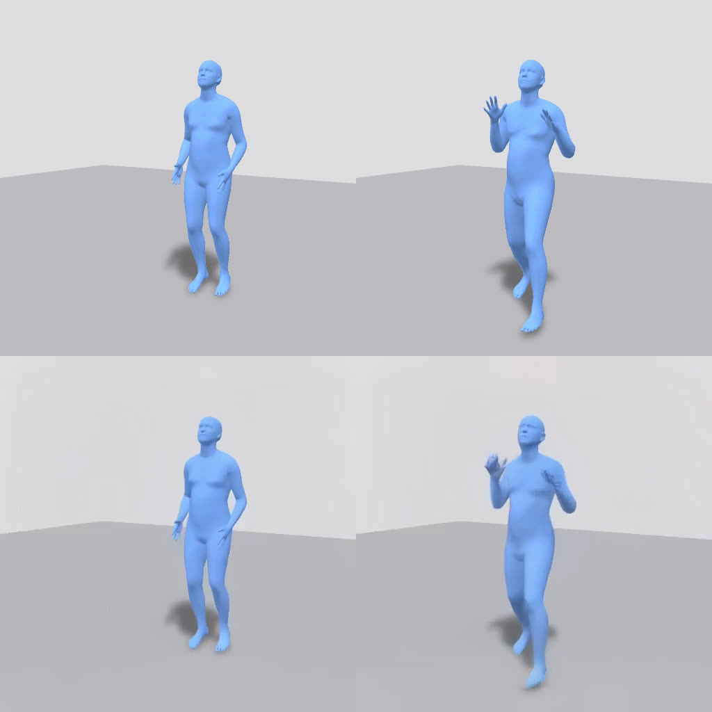
s1234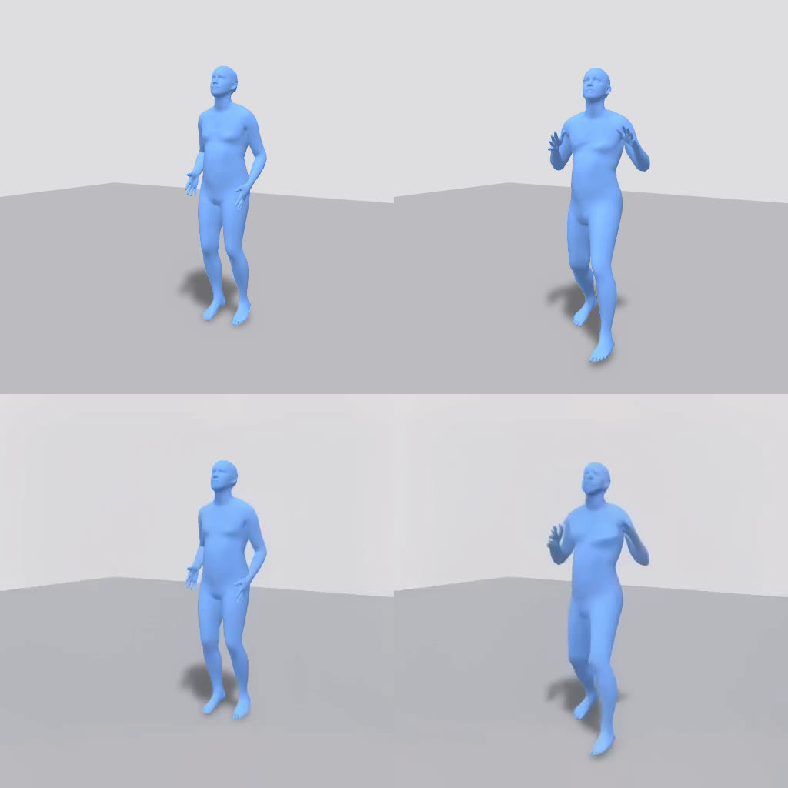
s5678K = 3_2 pins only 64, 88 and
120; K = 2_1 pins only 0 and 120. Even with the whole rest of the clip invented,
the pinned frames still land.Test 2 — K = all reproduces the input#
This is the check that says conditioning is being applied the way we think it is. It also gives the sweep its zero point: whatever K = all looks like is what "the video model contributed nothing" looks like.
K = all and K = 9. These should be boring, and they
are — that is the result.Test 3 — no morphing anywhere#
The failure we were watching for: instead of performing the action, the character smoothly slides or melts from one pinned frame to the next, taking the shortest path rather than the physical one.
Every interval between consecutive pinned frames was compared against the linear blend of its two endpoints. A pixel cross-dissolve is that blend, so a dissolve scores near zero.
Because morphing never appeared, KeyframeInterpolationPipeline was not needed. Everything in the sweep is TI2VidTwoStagesPipeline.
Extra: the off-grid negative control#
The latent-grid constraint predicts that asking for a frame index off the grid gets you a nearby one instead. That prediction was tested directly: squat s1234 was re-run conditioning on 0 / 60 / 120 — 60 is off the grid — and compared with the on-grid 0 / 64 / 120 run.
| request | peak match | IoU at peak | IoU at the requested index |
|---|---|---|---|
| 64 (on grid) | frame 64 | 0.946 | 0.946 |
| 60 (off grid) | frame 58 | 0.929 | 0.923 |
The on-grid request lands exactly where it was asked and scores higher. The off-grid request peaks two frames early and lower — consistent with snapping, though the margin is modest on a clip that moves slowly around frame 60.
squat s1234: the blue input, the on-grid run (0 · 64 · 120), and the off-grid
run (0 · 60 · 120). All nine production sets use grid indices only.